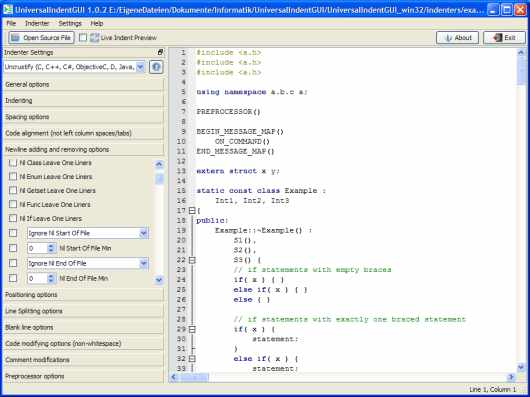
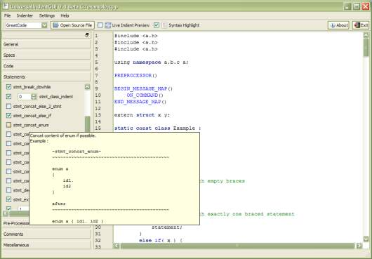
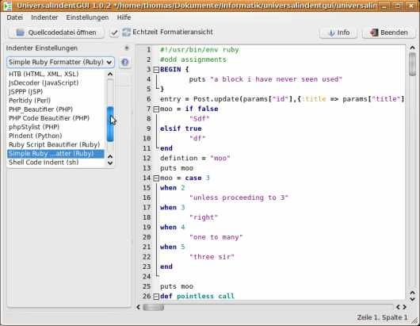
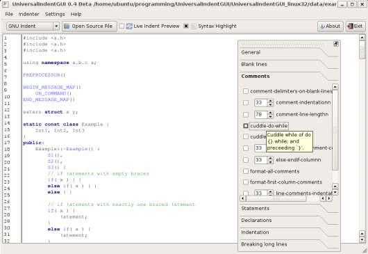
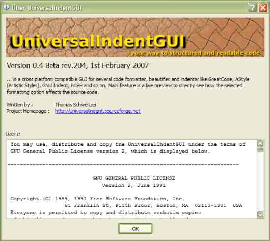

Screenshots

UniversalIndentGUI under XP with preview turned on.

UniversalIndentGUI under XP showing up a tooltip.

UniversalIndentGUI under Linux showing the indenter select menu.

UniversalIndentGUI under Linux with outdocked indenter parameter menu.

The about dialog of UniversalIndentGUI.